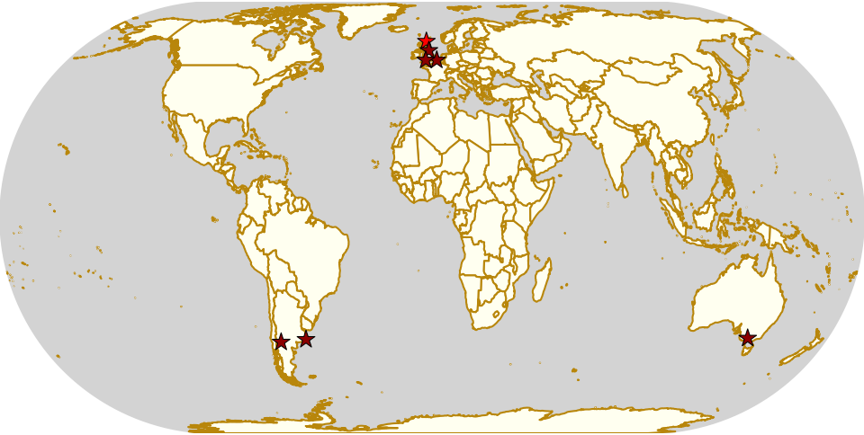
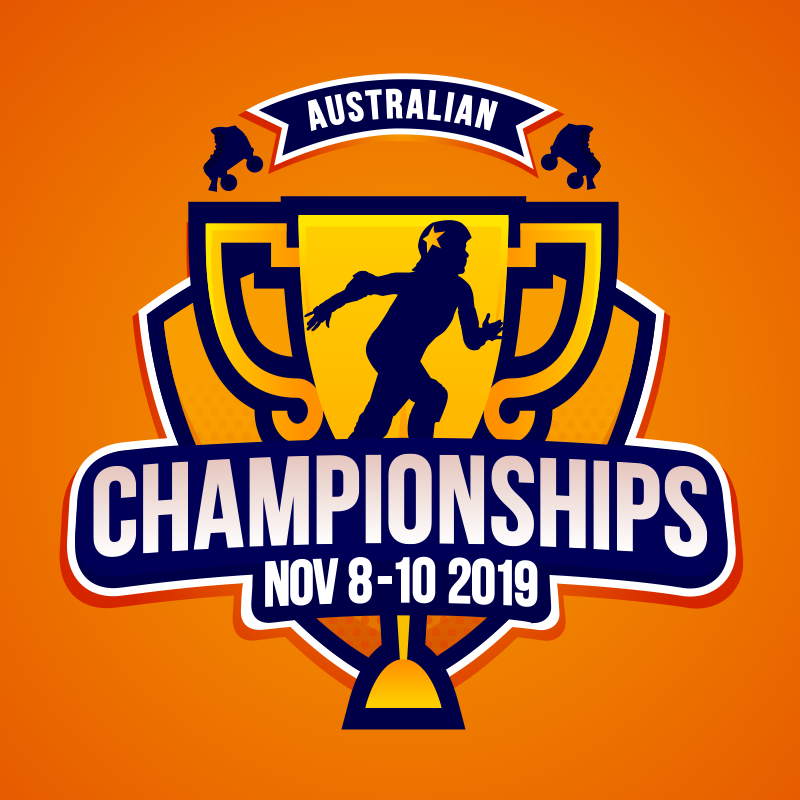
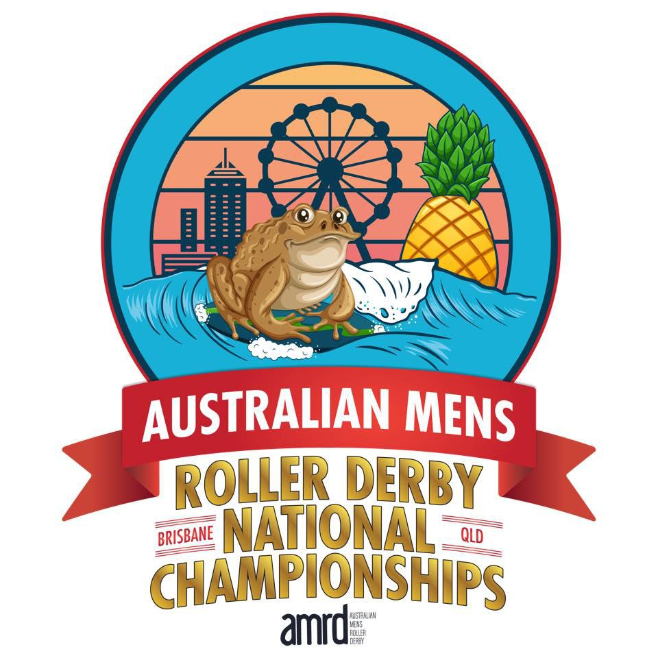
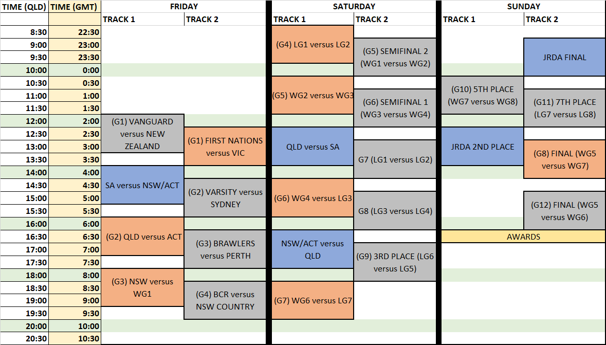
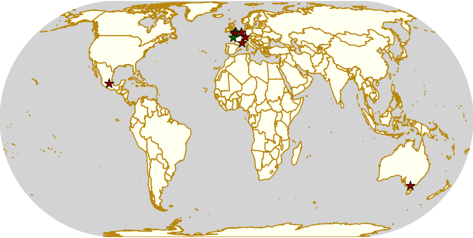

Weekend Highlights: 17 Nov 2019 (SUNDAY)
This is the Sunday addendum for the coming weekend, allowing us to highlight a few other events in countries overshadowed by big tournaments. There's exciting derby everywhere, and it's important that we don't miss the smaller (but equally significant) things behind the larger flashier events.
The rules are, as usual: highlights limited to 1 event per country, with an "extra" event allowed for a different kind of fixture (so, 1 tournament and 1 bootcamp), or if they involve Scottish leagues (since we are the Scottish Roller Derby Blog). Other notability might also allow the extra event - great posters, notable teams, etc. (League birthdays may count as "special" enough, at our discretion ;) )
In a bid to make this list as useful as possible, we've avoided links to Facebook except where noted. (Links to Teams are to non-Facebook resources - Instagram, or actual team pages - we'd strongly recommend that Teams get themselves an actual webpage [we can help host one if you need help]).
Locations are roughly organised East-West (with things before the weekend out sequence at the start).
Weekend Highlights: 16 Nov 2019
This is another exceptionally busy weekend - once again, as we come to the end of the year, each weekend has multiple National Tournaments in it. In this case, the 2019 Mexican National Championships are in Querétaro, and the Brasilian Nationals are in Blumenau. (Plus, of course, this is the weekend of WFTDA's Championships). In addition, the ongoing Finnish and French tournament fixtures recur again this weekend...
... and there are big tournaments in Kiel, Regensburg, Cambridge, Wiltshire, and Buenos Aires!
[We'd also like to shout out the bout in Japan, for Yokosuka Sushi Rollers versus Kamikaze Badass, and also Tel Aviv Roller Derby's open scrim!]
This is busy enough that we're going to have a second, short, Sunday-only update later in the week so we can fit more geographical range in here.
(Plus, more that we've not got space to summarise up here, and you'll have to read down for!)
The rules are, as usual: highlights limited to 1 event per country, with an "extra" event allowed for a different kind of fixture (so, 1 tournament and 1 bootcamp), or if they involve Scottish leagues (since we are the Scottish Roller Derby Blog). Other notability might also allow the extra event - great posters, notable teams, etc. (League birthdays may count as "special" enough, at our discretion ;) )
In a bid to make this list as useful as possible, we've avoided links to Facebook except where noted. (Links to Teams are to non-Facebook resources - Instagram, or actual team pages - we'd strongly recommend that Teams get themselves an actual webpage [we can help host one if you need help]).
Locations are roughly organised East-West (with things before the weekend out sequence at the start).

Australian Nationals 2019
Entirely reasonably, Australian Roller Derby has tended to organise on the State level, more so than the National level. Almost every State has at least one State-level tournament (5x5 Roller Derby, Statewide Stampede, Boom State Clash!, and this year's Tasmanian Tournament etc), but a formal National tournament has been longer in development, on the WFTDA side of things. (The biannual Great Southern Slam, which remains the largest regular Roller Derby Tournament in existence, sort-of stood in for a National event, but we don't think it ever intended to.)
As such, Australia's unusual in that there's been an Australian Men's Roller Derby Championships since 2014; but no Australian National Tournament for WFTDA-policy teams until last year! Even then, the Australians do things differently: the new Australian National Roller Derby Championships is organised on a State level itself; with teams representing Victoria, Queensland, New South Wales, the Australian Capital Territory, and a team representing the First Nations (the indigenous peoples of Australia). In this sense, it resembles, perhaps, the USA-based "State Wars" more than most other National tournaments. (In addition, the Australian Nationals has both adult, and Juniors tiers, with state-level teams in both.) It's notable, and still disappointing to us, that the Northern Territory, South Australia, and Western Australia are still not represented in the "National" tournament (Perth Men's compete in the Australian Men's, and South Australia in the Juniors!), but we hope that with proper support, this can happen in time.
(By contrast, the Australian Men's is a more familiar design, with city-based teams competing for the Cup.)
In their first year of operation, the "Australian Nationals" was entirely separate from the "Australian Men's", but this year, the two events have co-located whilst maintaining separate branding and organisation. The venue supports two tracks, although the running order shows that only track 1 will be streamed. As Track 1 seems to mostly be hosting the AMRD games, this is unfortunate for anyone interested in the JRDA and WFTDA-gender State tournaments; only the first game in the WFTDA-gender event will be streamed, along with the finals of each. (The schedule does appropriately offset the games on each track, so that one is "playing" whilst the other is in half-time or end of game break).
There are other changes from last year: in the Men's, New Zealand Men's Roller Derby is competing for the first time (making this... not really a National tournament any more...) EDIT: we've been informed that NZMRD did participate in the first Australian Men's in 2014, and could potentially upset things as they play #1 seed, Victoria's Vanguard in their first game. We are confident that the Vanguard will win, but a National level team always has the potential to cause spoilers.
In the Nationals, the ACT team is new this year; with only two leagues in the ACT area (a bit like the USA's Washington DC, the ACT is essentially a tiny area surrounding the national capital, Canberra), it's pretty easy to guess who their skaters might be. (Even with their team's decision to go fully into a Duck theme, with every skater skating under the name of an anatine pun, their numbers remain the same.)
In addition, the team representing the First Nations has changed: in 2018, "Team Indigenous Dreaming" represented, whilst this year, a new team called "First Nations and Accomplices" is in their stead. Team Indigenous Dreaming have clarified that the two teams are not related; First Nations and Accomplices, unlike Team Indigenous Dreaming, is open to "allies" of First Nations people, as well as First Nations people themselves.
(We'd like to thank Team Victoria for being the only State team to label the league each skater comes from on their roster; this makes it much easier to see how diverse their intake was! Team VIC has skaters from 7 different leagues, and whilst VRDL are definitely represented, they're by far not the majority contributor.)
As a co-hosted event, all three National Tournaments share a THR, the very experienced Denominator, and a THNSO, Mama Panda.
Looking ahead to the tournament predictions: for the Men's side, it would be unwise to rule out another tournament victory for Victorian Men's Roller Derby. Since the AMRDC started, they've only lost once; in 2017 when Tasmania took a shock victory and broke their three-year streak. With a conventional single-elimination format (and two consolation games), the tournament design will tend to reinforce its own seeding, making it very likely that the Vanguard will win. The most likely team to upset them, based on current Flat Track Stats ratings, is the host league, Brisbane's Scartel. With only a smattering of rating points between the two teams, home team advantage could easily be enough to allow the hosts victory.
The WFTDA-gender and Juniors tiers are much harder to predict: State-level teams which exist for only a single event have very little history to base predictions on (and even a roster only gets you so far). In 2018, (WFTDA-gender) Team Queensland won, with a strong (222:125) victory over Team Victoria in the final, whilst for the Juniors, Team NSW/ACT took an equally striking victory over Team South Australia.
The WFTDA-gender tournament is structured as a double-elimination tournament; as such, we're not as concerned for the First Nations team, who are drawn against Victoria for their first game, as they will have a chance to progress in the lower bracket. (Interestingly, this is the same draw (switching FN&A for TI:D) that was determined in 2018, although with an additional team in the mix, the brackets are otherwise different.)
The Junior tournament, with only three teams - South Australia, Queensland and "New South Wales + ACT" - has an interesting structure which seems designed to give them as many games as possible. A three game round robin (which would ordinarily supply an unambiguous champion in itself) selects into a "Grand Final" for the top 2 teams; but even then, the loser in the Final plays the remaining team in a "2nd Place playoff". This structure returns from the previous year, but we still remain unsure as to why the competition isn't simply running a double round robin (which would give all the teams an equal number of games, for the addition of just a single scheduled bout).
The Australian National Roller Derby tournaments, all of them, will start on Friday 8th November, at the Mt Warren Sports Centre, 2 Milne Street, Mount Warren Park, QLD, Australia.
Weekend Highlights: 09 Nov 2019
This is another exceptionally busy weekend - with no less than two single-event national tournaments (Australia and South Africa), as well as fixtures from the Swedish, Finnish, French and German national series!
Quite apart from those, there are also international events in Newcastle (as Newcastle Roller Girls celebrate 10 years), Vienna, and Vicenza; Short Track Roller Derby and referee clinics in Buenos Aires; and a National Meeting of minds in Manizales, Colombia!
(Plus, more that we've not got space to summarise up here, and you'll have to read down for!)
The rules are, as usual: highlights limited to 1 event per country, with an "extra" event allowed for a different kind of fixture (so, 1 tournament and 1 bootcamp), or if they involve Scottish leagues (since we are the Scottish Roller Derby Blog). Other notability might also allow the extra event - great posters, notable teams, etc. (League birthdays may count as "special" enough, at our discretion ;) )
In a bid to make this list as useful as possible, we've avoided links to Facebook except where noted. (Links to Teams are to non-Facebook resources - Instagram, or actual team pages - we'd strongly recommend that Teams get themselves an actual webpage [we can help host one if you need help]).
Locations are roughly organised East-West (with things before the weekend out sequence at the start).

Brasileirão 2019
After a brief pause, we're continuing with this year's review of upcoming national tournaments with a return to Brazil's almost-officially-national-tournament, the Brasileirão (link to Facebook).
As we discussed last year , the Brasileirão is now in its 8th year, and continues to change with the changing of Roller Derby in Brazil itself. The 7th Brasileirão ended with the following final standings:
- Gray City Rebels (São Paulo)
- Blue Jay Rollers (Curitiba)
- Ladies of Helltown (São Paulo)
- Thunder Rats Derby Squad (Santos)
- Iron Ladies (Blumenau) / Capivaras Roller Derby (Piracicaba) [no placement game]
This year's Brasileirão is hosted in Blumenau, by the Iron Ladies , as a three-day event, interleaving a 4 team round robin tournament with competitors from across Brazil, with mixed scrimmage events for other competitors. (This is a change to the previous tournament structures, which were run as single-elimination events.)
Last year, in a change from previous competition, there was no representation from Rio de Janeiro, with 6 competitors in total; this was, we assume, related to the formation of a second league in Rio around the time of applications (Avas Roller Derby). This year, whilst the number of competitors has reduced; with Santos and Piracicaba out of the list; there is renewed representation from Rio, as the newer team, Avas, is attending this year. (The field is still reduced by 2 in total, as out of the two leagues representing São Paulo in 2018, only Gray City Rebels are attending this year.)
Over the last several months, we've spoken to the Brazilian roller derby community on this, and other planned events, and unfortunately, this decrease in size is a marker for a more general difficulty for the sport in this country, and in other Latin American nations. As people are hopefully now more aware, the cost of Roller Derby - economically, and in other ways - in South America is much higher than it is in most of the USA and other wealthy Western countries. (This isn't just cost, it's also issues like practice space, accessibility of kit, and even accessibility of the bulk of writing about Roller Derby, which is mostly in English). The Copa Libertadoras, which would have been a second Brazil-hosted, Latin America scoped, tournament at the end of this year, recently announced that it was unable to proceed, and would be attempting a 2020 event instead.
These difficulties, however, are also why the continuing organisation of events like the Brasileirão are so important, to keep the roller derby community connected and part of something big.
The 8th edition of the Brasileirão will run from 15 - 17 November 2019, in Blumenau, SC, Brazil. ( EEB Professor João Widemann - Rua 4 de Fevereiro, 64 - Itoupava Norte, Blumenau/SC )
Weekend Highlights: 02 Nov 2019
Despite being a bit busy, we're trying a new thing this week to give us more space, and are grouping all "National tournament" fixtures on a date for a given country into one entry - so here, Dijon and Saint-Gratien share a Championnat de France spot. With this being the week of Halloween, there's a lot of "spooky" events earlier in the week and on the weekend, but there's some very exciting other developments, including the first internal interleague bout in Uruguay, Liverpool Roller Birds' 10th anniversary, and the Rebellion tournament returning to Melbourne for another year!
The rules are, as usual: highlights limited to 1 event per country, with an "extra" event allowed for a different kind of fixture (so, 1 tournament and 1 bootcamp), or if they involve Scottish leagues (since we are the Scottish Roller Derby Blog). Other notability might also allow the extra event - great posters, notable teams, etc. (League birthdays may count as "special" enough, at our discretion ;) )
In a bid to make this list as useful as possible, we've avoided links to Facebook except where noted. (Links to Teams are to non-Facebook resources - Instagram, or actual team pages - we'd strongly recommend that Teams get themselves an actual webpage [we can help host one if you need help]).
Locations are roughly organised East-West (with things before the weekend out sequence at the start).
Weekend Highlights: 27 October 2019 (Sunday)
This is the Sunday addendum for this week's highlights; and it's a pretty busy Sunday, taking into account the several "whole weekend" events in our Saturday main highlight update.
As well as Sunday, we have one event for next Wednesday, in St Petersburg. Wednesday is a difficult date for our highlights, as Monday isn't really enough notice, so we're including it here for safe keeping.
The rules are, as usual: highlights limited to 1 event per country, with an "extra" event allowed for a different kind of fixture (so, 1 tournament and 1 bootcamp), or if they involve Scottish leagues (since we are the Scottish Roller Derby Blog). Other notability might also allow the extra event - great posters, notable teams, etc. (League birthdays may count as "special" enough, at our discretion ;) )
We've bent the rules a bit this time, because it's important to highlight derby in regions which need more attention.
In a bid to make this list as useful as possible, we've avoided links to Facebook except where noted. (Links to Teams are to non-Facebook resources - Instagram, or actual team pages - we'd strongly recommend that Teams get themselves an actual webpage [we can help host one if you need help]).
Locations are roughly organised East-West (with things before the weekend out sequence at the start).

South Africa's National Derby Fest 2019
The South African National Roller Derby Festival ("National Derby Fest") may be the smallest of the National Tournaments we covered last year , but it's also potentially one of the more important to its community.
As we covered in our article on the South African roller derby community earlier this year , the population of South Africa is concentrated in a small number of widely-separated areas, so it's very expensive for the teams to play each other (let alone teams from other nations). As such, having this one big event at the end of the year is an achievable focus, and the community time it provides is all the valuable for it.
In last year's NDF, Johannesburg's Golden City Rollers , and Cape Town Rollergirls competed for the final rankings:
- Golden City Rollers
- Cape Town Rollergirls
(The third team present, Durban Roller Derby, participated in the first two bouts, mixed teams games with skaters from all three teams.)

This year's National Derby Fest has a change of format, designed to maximise the amount of game play each team got. As such, this is National Derby Fest is a double round robin: each team will play the others twice, in half-length games (two 15 minute periods). As numbers for all teams are a little low this year, this will allow everyone to participate in as much derby as possible, whilst still playing WFTDA-rules otherwise.
The fourth league in South Africa, Pretoria's P-Town Roller Derby, will be donating a skater to the Cape Town team, and we assume will be donating volunteers.
The winners on points will go forward to play each other in a full-length WFTDA-regulation Final.
Golden City Rollers told us:
NDF is the highlight of the local derby calendar, so we're super excited to host it this year, and to see all our sister leagues again. Of course, the most important thing is to play some derby and enjoy every second, as we don't often get a chance to compete in SA. Secondly, it's an opportunity to introduce new spectators to the sport, so we're hoping it will help grow roller derby in SA.
National Derby Fest 2019 will be hosted at: Uniao Portuguesa, 4 Eastwood street, Turffontein, Johannesburg, South Africa, on 9 November, starting at 0930.
Weekend Highlights: 26 October 2019
This is another exceptionally busy weekend, so again we're moving Sunday-only events into a separate update later in the week. Even doing that, it's a packed schedule, including: Bologna's Hyenas hosting two days of roller derby at the Ferrara Tattoo Convention, a double header of derby up in Aberdeen, Nantes and Gdańsk both hosting events to celebrate their leagues' respective anniversaries, a whole sur5al tournament in New Zealand, and a two-track international tournament in Hull! (And more - the first MRDA-sanctioned triple header in Spain, a weekend of derby in Querétaro... !)
We're trying to stick to our rules below, so a lot of events - especially in Australia, which is currently at the height of its Spring events schedule - are having to be missed off the list. (We're open to considering treating very large countries in terms of their constituent States, for the purpose of allowing events, but we'd like the community to let us know how they feel about that.)
The rules are, as usual: highlights limited to 1 event per country, with an "extra" event allowed for a different kind of fixture (so, 1 tournament and 1 bootcamp), or if they involve Scottish leagues (since we are the Scottish Roller Derby Blog). Other notability might also allow the extra event - great posters, notable teams, etc. (League birthdays may count as "special" enough, at our discretion ;) )
We've bent the rules a bit this time, because it's important to highlight derby in regions which need more attention.
In a bid to make this list as useful as possible, we've avoided links to Facebook except where noted. (Links to Teams are to non-Facebook resources - Instagram, or actual team pages - we'd strongly recommend that Teams get themselves an actual webpage [we can help host one if you need help]).
Locations are roughly organised East-West.

Weekend Highlights: 20 October 2019 (Sunday)
This is the Sunday addendum for this week's highlights; and it's a busy Sunday (some two-day events are already covered in the Saturday highlights, and there are still triple headers here!). Sunday also remains a place for scrimmage, though, with many of these events being more informal affairs.
In addition to the above, remember that there are two open Short Track events this Sunday: the low-contact event in Halifax, and the introduction to Short Track in Worcester.
The rules are, as usual: highlights limited to 1 event per country, with an "extra" event allowed for a different kind of fixture (so, 1 tournament and 1 bootcamp), or if they involve Scottish leagues (since we are the Scottish Roller Derby Blog). Other notability might also allow the extra event - great posters, notable teams, etc. (League birthdays may count as "special" enough, at our discretion ;) )
We've bent the rules a bit this time, because it's important to highlight derby in regions which need more attention.
In a bid to make this list as useful as possible, we've avoided links to Facebook except where noted. (Links to Teams are to non-Facebook resources - Instagram, or actual team pages - we'd strongly recommend that Teams get themselves an actual webpage [we can help host one if you need help]).
Locations are roughly organised East-West (with things before the weekend out sequence at the start).
